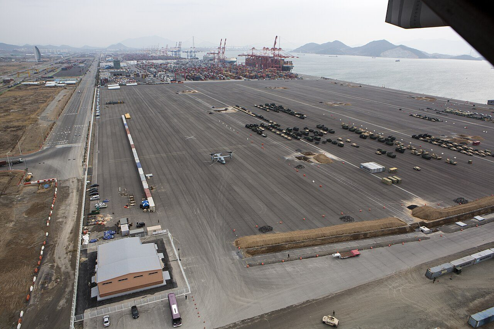
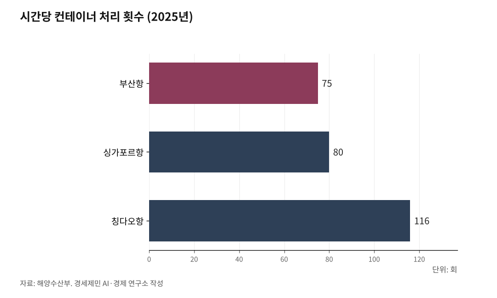

[해양 AI 융복합②] 광양항, 정부 '피지컬 AI 항만' 첫 실증 거점 됐다
정부, 2029년까지 7724억원 들여 광양항에 완전자동화 4선석
줄잡이·컨테이너 고정 등 사람이 다치던 작업이 무인화 대상
AI경세제민=김갑봉 기자 | 해양수산부가 AI로 장비를 직접 제어하는 '피지컬 AI 항만' 전략을 내놨다. 첫 실증 거점은 광양항이다. 무엇을 짓고 항만에서 일하던 인력은 어떻게 되는지 사실로 짚는다.

전남 광양항에서 7월 30일 부두 공사가 시작됐다. 사람이 아니라 인공지능이 컨테이너를 내리고 옮기는 부두다. 해양수산부와 여수광양항만공사는 이날 '항만자동화 테스트베드' 착공식을 열었다. 황종우 해양수산부 장관과 최관호 여수광양항만공사 사장을 비롯해 150여 명이 자리했다.
4선석 완전자동화 부두
이번 사업에는 2029년까지 7724억원이 들어간다. 국비와 여수광양항만공사가 절반씩 낸다. 공사 대상은 광양항 3-2단계 컨테이너부두 4선석이다.
정부는 배를 대는 자리 네 곳을 완전자동화 부두로 짓는다. 다 지으면 해마다 136만TEU를 처리한다. TEU는 6m 길이 컨테이너 한 개 분량이다.
부두에는 안벽크레인 8기와 야드크레인 32기가 들어선다. 안벽크레인은 배에서 짐을 집어 올리고 야드크레인은 쌓아둔 짐을 옮긴다. 무인 운반차 44대와 항만운영시스템도 함께 깔린다.
해양수산부는 국내 항만이 자동화를 안정적으로 들일 여건을 만들고 항만기술시장을 새로 여는 것이 목표라고 밝혔다.

AI가 야적장을 스스로 짠다
해양수산부는 이 부두를 단순한 자동화 항만을 넘어선 차세대 스마트 항만으로 짓겠다고 밝혔다. 장비를 정해진 대로 움직이는 데 그치지 않고 AI가 상황을 판단하게 만든다.
컨테이너를 쌓아두는 야적장에는 '에이전틱 AI'가 들어간다.
사람이 일일이 시키지 않아도 스스로 목표를 세우고 일을 처리하는 AI다. 해수부는 이 AI가 야드 운영을 스스로 최적화한다고 설명했다.
무인 운반차가 다니는 길도 AI가 살핀다. 바닥에 금이 가거나 땅이 내려앉는 조짐을 실시간으로 분석하는 기술을 넣는다. 해수부는 크레인과 무인 운반장비가 주변 상황을 스스로 인식해 작업하는 기술도 개발한다고 밝혔다. 배와 항만, 트럭 이동을 실시간 분석해 작업 순서를 정하는 항만운영시스템도 만든다.
고위험 작업 무인화와 고용
해양수산부는 전략에서 항만 생산성 30% 향상과 함께 안전사고 원천 차단을 목표로 제시했다.
무인화 대상은 둘이다. 배가 부두에 닿을 때 밧줄을 묶는 줄잡이 작업, 컨테이너를 배에 붙들어 매는 고정장치를 채우고 푸는 작업이다.
두 작업 모두 사람이 다치기 쉬운 자리다.
해양수산부는 고용 변화도 함께 짚었다. 진해신항을 짓는 동안 건설 일자리는 새로 생기지만 항만을 운영하는 인력은 줄어들 수 있다고 인정했다.
한국노동연구원은 2022년 고용노동부 위탁으로 스마트항만이 고용에 미치는 영향을 분석했다. 부산·광양·인천 건설 단계 고용효과를 2만7651명으로 추산했다.
운영 단계는 다르게 봤다. 기존 운영사가 옮겨 와 직원을 모두 승계하면 종사자는 2023년 2210명에서 2030년 2696명으로 는다. 승계 비율이 30%면 2316명, 70%면 2533명에 그친다.
해양수산부가 내놓은 대응 방안은 둘이다. 노사정 협의로 충격을 줄이고, 새로 짓는 터미널부터 우선 도입한다.
광양서 검증, 진해서 상용
해양수산부는 7월 23일 정부서울청사에서 열린 제11회 과학기술관계장관회의에서 '피지컬 AI 항만 전략'을 발표했다. 과학기술정보통신부 등 관계부처와 함께 마련했다.
해수부는 피지컬 AI 항만을 이렇게 정의했다. AI가 항만 상황을 스스로 인지하고 판단해 장비를 제어하고 운영을 최적화하는 차세대 스마트 항만이다.
전략은 네 갈래다. 기술 기반을 확보하고, 우리 기술로 항만과 배후단지를 바꾸고, 산업 생태계를 키우고, 제도와 이행 기반을 정비한다.
일정도 함께 내놨다. 2027년 광양항 첨단항만기술원 타당성을 검토하고 2029년 광양항 테스트베드를 짓는다. 2032년 문을 여는 진해신항 1단계는 9선석이다. 이곳을 피지컬 AI 선도 모델로 만들고 2040년 2단계로 넓힌다.
진해신항 배후단지에는 항만 특화 AI 데이터센터와 스마트 공동물류센터를 짓는다. 제조와 항만, 물류를 잇는 'P.AX 클러스터'도 만든다.
공두표 해수부 항만국장은 항만 전반에 우리 AI 기술을 본격 도입하는 첫 종합 전략이라고 말했다. 항만공사와 운영사, 산업계, 항만 노동자 목소리를 반영하겠다고 밝혔다.
국산 크레인이 미국으로
국산 장비와 국산 운영시스템을 쓰는 것도 전략의 한 축이다. 실제 항만에서 검증해 기술 신뢰성을 확보하고 해외 진출을 넓힌다는 구상이다. 안벽크레인을 만드는 HD현대삼호는 7월 26일 미국 워싱턴주 타코마항 운영사 WUT와 크레인 4기 공급 계약을 맺었다. 해수부는 이번 사업 참여 실적이 바탕이 됐다고 밝혔다.
정부는 2035년까지 재정 3조3000억원을 넣어 생산유발 36조원, 부가가치유발 12조원, 고용유발 11만 명을 기대한다고 밝혔다. 항만장비 세계시장 점유율 10%도 목표로 걸었다.
해양수산부는 우리나라 수출입 물동량의 99.7%를 항만이 처리한다고 밝혔다. 부산항은 세계 7위 컨테이너 항만이자 세계 2위 환적항만이다. 다만 해수부는 물동량 순위가 오래 정체됐고 처리 속도도 경쟁 항만에 못 미친다고 진단했다.
숫자로 보면 이렇다. 2025년 선석 기준으로 배와 항만 사이 컨테이너를 옮기는 횟수는 시간당 부산항 75회다. 싱가포르항은 80회, 칭다오항은 116회다.
광양항 부두는 2029년 완공이 목표다.
※ 이 기사는 AI 프로그램 클로드를 활용해 작성했습니다.
참고문헌
가. 공식 발표자료와 공공기록
· 해양수산부 항만개발과, 「항만이 '하나의 거대한 지능형 로봇'으로, 피지컬 AI 항만혁신 본격 추진」, 2026.7.22., https://www.mof.go.kr/doc/ko/selectDoc.do?docSeq=67543&bbsSeq=10&menuSeq=971
· 해양수산부, 「장관약력」(황종우 장관), https://www.mof.go.kr/index.do?menuSeq=469
나. 연구보고서와 논문
· 김기덕·윤석천·김홍준·김영빈·김찬호·김가현·최상균·이해춘, 『스마트항만 도입이 고용에 미치는 영향』, 한국노동연구원 고용영향평가센터, 2022.(관계부처 해양수산부), https://www.kli.re.kr/eia/asmntRsltView.es?rslt_no=291&mid=a30301000000
다. 언론 보도
· 김선국, "항만이 '거대한 AI 로봇'으로…2035년 피지컬 AI 항만 구축", 헤럴드경제, 2026.7.23., https://biz.heraldcorp.com/article/10817104
· "크레인부터 물류까지 AI가 제어…피지컬 AI 항만 시대 연다", 이투데이, 2026.7.23., https://www.etoday.co.kr/news/view/2606305
· "광양항, 피지컬 AI 시대 첫 삽…국내 첫 완전자동화 항만 구축 본격화(종합)", 해사신문, 2026.7.30., http://www.haesanews.com/news/articleView.html?idxno=149774
· "피지컬 AI 항만 시대 연다…광양항 자동화 테스트베드 첫 삽", 이투데이, 2026.7.29., https://www.etoday.co.kr/news/view/2608551
· "'피지컬 AI 항만 혁신, 광양항에서 시작한다'…해수부, '항만자동화 테스트베드' 구축사업 착공", 인공지능신문, 2026.7.31., https://www.aitimes.kr/news/articleView.html?idxno=41272
· "'피지컬 AI 항만 혁신 시작'…30일 광양항 '항만자동화 테스트베드' 착공식", 로봇신문, 2026.7.29., https://www.irobotnews.com/news/articleView.html?idxno=47664
사진 출처
· [대표사진] U.S. Marine Corps photo by Cpl Sara A. Medina, III MEF, "1190935 Gwangyang Port Terminal in South Korea 2014.jpg", 위키미디어 공용, 퍼블릭 도메인, https://commons.wikimedia.org/wiki/File:1190935_Gwangyang_Port_Terminal_in_South_Korea_2014.jpg
※ 이 기사는 인공지능을 활용해 작성했습니다.
관련기사
- [해양 AI 융복합③] 부산항만공사, 국내 첫 'AI 항만' 전환 계획 내놨다
- [해양 AI 융복합①] 공항 옆 인천항이 200㎞ 밖 군산항보다 늦는 까닭
- [해양 AI 융복합④] 항만 첫 데이터센터 품는 인천 신항, 착공은 또 2027년 하반기 뒤로
- [해양 AI 융복합⑤] 자율운항선박, 배보다 먼저 온 국제 규범
저작권자 © AI경세제민 무단전재 및 재배포, AI학습 및 활용 금지